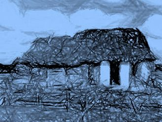
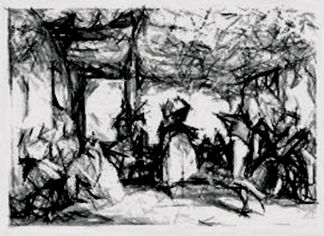
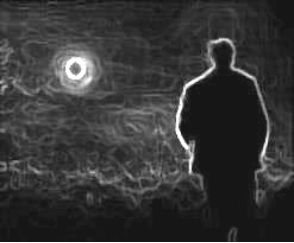
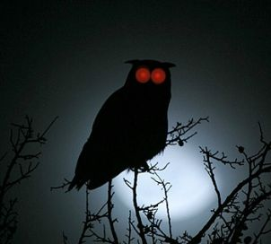
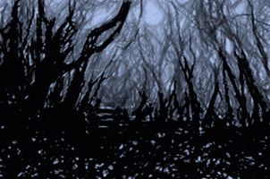
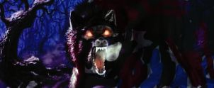
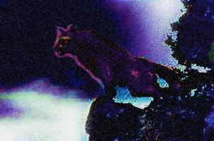
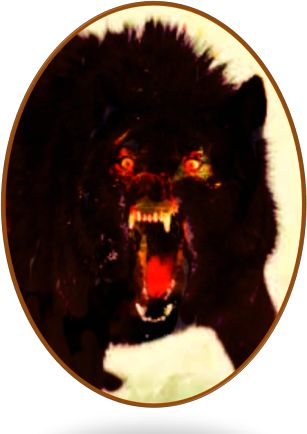

| Cadejo ソウルイーター | |
| Milton Pérez | |
| (2017) | |
著書について：
著：
ミルトン・アドルフォ・ペレス・エスコバル。
読書が彼の好みに合わせていることを期待して、あなたのコメントのメー ル miltonadolfo.escritor@gmail.co m を受け取るために私の喜びだろう
グアテマ ラ 201 7年1月 2 9 日。
著作権の所有者の書面による許可なしにコピー、コンピュータ処理し、この作品のコピーを配布するなど、任意の手段またはプロセスによるこの作品の全部又は一部複製することは、固く禁じられています。同上公的賃貸や融資のために。
初版
はじめに
Cadej o は酒や無秩序な生活を愛する人たちの魂を食い入るように努める悪である、人々と無数の出会いは伝説となっています。
以下のページでは、別の場所にあなたの想像力によって取得されますと、あなたはそれがこの地獄のモンスターを身をもって遭遇するものを体験することができます。
本当にあなたは、この恐ろしいと魅惑の物語をお楽しみください。
EL CADEJO
Devorador De Almas
時以来太古の男は、彼はいつものフレーズを聞いた世代から世代へと、暗闇を恐れてきました。夜に外出しないでください！彼はまた、存在するその理由を持っているので、賢明な協議会を、挑戦者逃したことはありません。
すべての私の思春期は、家族が私の家か ら5 分最寄りの住んでいたグアテマラの農村地域に住んでいました。その時、それは私にとって非常に正常だったと隣人は遠くなかったと私には思えませんでした。
使用されるプロパティが大きくなると、中央の家が建設された中で、彼らは自分の消費のために果物の木、ペットを持っているか、販売するために使用され、多くはトウモロコシと同じ分野でいくつかの薬用植物を植えるために利用しました。
周りの多くの木々や野生動物、彼は歩いて、ちょうどいくつか忙しいの部分が少し広くなったそこを通って狭い汚れパスがありました。時には、特定の場所に行くために、あなたは川と平均歩行時間半以上を横断しなければなりませんでした。
 それはずっと悩まされているが見えた私の村や近くの町でもないために歩いて誰もがそう動員するための唯一の方法だった歩いて輸送していました。
それは空が夜はかなりはっきりしていたと月は、ランプなしで歩くことを非常によく点灯 、 195 7年 1 2 月には、空気がとても冷たいありました。
私の家族と私はジョンとカルメンの結婚式に招待された、ファンは私のいとこだったとその時によって私 は 1 9 歳でした。
私は行くことは非常に興奮していたいつものように結婚式で、離れて食品や酒類からそうに踊ることを知っていました。しかし、私の両親は、ストリームといくつかの峡谷を幅木、ジョンの家は一時間半離れた私たちからだったし、悪路を通過しなければならなかったことに興奮しませんでした。
私の父は、私たちは私の母は非常に強いインフルエンザがあったので行っていないでしょうし、寒さやウォーキングに悪化ことができました。
私はまた、メアリー、ジョンの家の近くに住んでいたと私は言っていること、私はパーティーで彼女に会いに機会を逃すと、うまくいけばと踊ることができませんでした 誰 1 7 歳を誘われたが分かったので、私は行きたかった主張しましたそれは。
私はパーティーの日に日を数え始め、彼はその日着るだろう服を準備し、幸いにも私は私の誕生日のためにスーツを与えていたし、それはその特別な機会のために完璧でした。
私は結婚式の日に到着し、私は非常に興奮し、私のお父さんのための準備をしていた私は、私を呼び、私に言った参照することを決定し、ペド ロ .. . あなた は Cadej o を受け取ることができるので、あなたが遅すぎる戻ってパーティにない行けば。
彼 は cadej o は、まっすぐ地獄から何か言った子供たちの話を聞いていました。
犬よりもさらに大きな犬の形をした悪魔のようなもの、その赤い目の火のように炎を燃やして登場し、彼の鼻を殺すと涙に使用される動物の巨大な独自の歯でいっぱいだった猛烈な獣、あなた息は硫黄蒸気としてだったし、自分の足の上に、背中に黒いコート林立する最も困難な石でマークすることができ、長い強力爪を持っていた、サンプル獰猛でした。
このビーイングは、彼が一人で歩いて、夜遅くに酔って人に現れました。
これらは 、 Cadej o に実行しているの不幸を持っていた人たちは決して現れないことを言って、彼らの出会いを生き延びた人々の数は、彼らは彼らの両親や祖父母がそれを教えていたこと秘密情報を使用して達成したことを告げました。
したがって、誰も私の村や近隣の村に一人と後期歩いて危険にさらしません。
私 は Cadej o のための恐怖を感じなかったし、彼らは男性が酔っておくと、当事者の村や近くの村で楽しみを持っている話と思っていたん。
遠慮なく何私の父は私の村と私の他の少年たちも彼らと一緒に戻って行くだろうので、私は、アドバイスのために彼に感謝し、彼は心配していたことを彼に告げ、私に言いました。
その日私はジョンの結婚に向かって行き、実際にあれば、私は自分の家の近くに住んでいた友人二人と一緒に行きました。私はとても幸せ私のいとこのジョンを見たことがないし、その日のように配置されなかった、彼女の結婚式はシンプルだったが、そこに多くのゲストは、伝統をしたとして、午後を終了して、常に音楽とダンスを使用していました。
これは、音楽は、私はメアリーに接近し始めたと心から彼女を迎え、彼女は美しい笑顔で私の挨拶に答えの前に、彼はより多くのように待っていた瞬間でした。
彼女は私と一緒に、私は彼の目を見て、そう言った瞬間のために考えた後に踊ることに同意した場合、私は尋ねました。
すぐに音楽が始まったとして、党に私を同行の友人は、戻る時間だと思ったようです。私はそれがあまりにも早かったことを伝えましたが、それは非常に寒い始め、夜遅く歩いて好きではなかったと言われました。
私は手でメアリーに持っていたので、離れてそれらを送信し、私を心配していないことを伝え気軽に彼女と一緒に踊るチャンスを見逃すことができませんでした、非常によく照らさだけのためにランプを使用する必要はありませんでした満月がありました我々 は1 をロードし、それは彼らが彼の復帰のために使用するであろうということでした。
その時は何も私はメアリーを愛してどれだけ考えるように私の心を通過しなかった と frecuentándol a を続けるだろうし、おそらくすぐに私たちは結婚するでしょう。
ダンスの間に私はダンスがファンの家の中庭にいたので、夜の寒さを感じないように酒のいくつかのショットを取ります。
時間が経つにつれて最初のパーティ酔っぱらい、人々が場所を離れるようになった地面に落下して、私はメアリーだけその夜私と一緒に踊っていたことをとても幸せでした。私は彼女と一緒に踊りたかった、時間を感じませんでした。

それは非常に遅かったとメアリーの家族はみんなにさよならを言うようになった、マリアは行く時間だったと私はすぐに私に同行することを申し出た私に言いました。私は招待状のために彼に感謝し、誰既知とジョンに別れを告げると、私たちはパーティーから撤退します。
私たちは 約 1 5 分歩いて、マリアの家に来て、私は彼女の両親と彼女の大きな抱擁にさよならを言いました。私が去る前に、彼は彼に私の復帰のためのランプのために行くために数分を与えるために私に言ったが、私は非常に良い月を持っていたし、必要ではなかったと述べました。
私の家はその場所から一時間半だったと歩き始め、酒のために少しグラグラと私は取らないために使用されるが、私の家にできるだけ早く到達するペースを早めるしようとした特にため。
 多分それは朝 の2時 4 0 分だった、それは非常に寒かったし、いくつかの霧がありました。月光は非常によく照らさが、絶えず風によって移動し、彼女の前を通過雲に覆われていました。

夜の静寂の中、私はフクロウの歌を聞いて、私の心に、彼が子供だったとき、彼らは人々に語った話が来ました。
彼らは、この鳥の歌は死を発表するが、私は恐れていなかったと思ったことを言いました。私が滑り、私は先に行くことにするつもりはない、道路に集中しなければなりません。彼は安全に歩くことを試みたと私はそれが速い思っていたが、私はほとんど移動することができます。
私はその夜ほど酔ったことがなかったと私は私の体中のアルコールの影響を制御するためにそれが困難でした。
木はかなり暗いシルエットを描き、風で落ちた枯葉を富ん。
私は私の後ろに大声で亀裂を聞いて、突然、私は何も見ることができなかっ振り返るために、誰かが私を次れたことを不思議な感覚を持つようになりました。私は非常に多くの木の真ん中に暗いトンネルを見ました。
私はより速く行くことを試みたが、道が荒れてい た .. . 任意の失策、あなたが落下してけがを可能性があり、浮き沈み、直線部、曲がりを持っていた、私は非常に高速で移動することができませんでした。
私の前にあった、交差していた流れがありました。次に、とだけ、彼はいくつかの峡谷をスカートしなければならなかったし、私の家に非常に近いだろう。
私は小川に達し、アルコールの影響の一部を回復するために私の顔を濡らしする機会を得ました。私は葉が再び私の後ろにざわめく聞いてびっくりしたに立っていたとして、それは誰か何か踏んだかのようでした。
その瞬間、私はそれはやや奇妙だったが、私はそれらの場所で攻撃のことを聞いたことがなかったので、誰かが実際に、私を次れたことに気づきました。
突然、彼らは私の心に戻って、彼は子供のように聞いていた話を来て 、 Cadej o は無秩序人生を生きた人々の魂をとりこに恐ろしいビーイングは、彼らはそれが彼が登場することを彼らにした、深夜が好きで、酒を愛しました。
震えはありません、私は恐れていたことがなかった、私は自分自身を落ち着かしようとした、私の体を介して実行し、私の肌のクロールを感じました！これもアルコールでなければなりません。私は小川の冷たい水に最も明確な心のおかげで、再び道路に入社しました。
私はすでに緑豊かな渓谷に隣接し、それが私の家に達するに近づいた知っていた、ゆっくりと私の心はメアリーとその美しい瞬間について考え続けて、彼は聞いていた話の細部を覚え始めました。
各渡し分は、おそらく話が本当だったと誰も夜は別送として旅行しないことをことをより多くの思考を持ちます。
選択の余地を持ってい た .. . 最良のオプションは継続していた、私は、ある時点で、彼は返すことができなかったの仕方だった、でも彼はどこでとどまることができます。
彼はメアリーと踊っていて幸せでしたが、数分の経過とともに、私は一人でこんなに遅くし、酔って返された私のより多くのを後悔しました。
確かに私の父は従わなかったために、次の日に私を罰するだろうが、無事に家に到着しながら、残りの部分は問題ではないでしょう。

管理ほんの数月光は私の道を照らすために濾過非常に多くの木が、前方に数歩以上のものを見ることができませんでした。雰囲気はとても寒くなり、石だらけの沈黙が行われました。
私は突然、重い空気を感じ、私の感覚ではシャープと明確に上を歩くために、葉の擦れる音が私の呼吸を聞くことができたし、風が吹き、しかし、すべての時間が私の後ろの葉 を rustle d としてどのような自分の血液を冷却することは聞きましたどんどん近づいて。
私は、それは酒の影響だけでなく、私はこれらのますます頻繁に悪寒を感じさせる寒い夜だけでなく、思った彼は、暖かい得ることができませんでした急いでたにもかかわらず、私は私の下に冷たい汗を感じるようになりました肌。
私は足音は私が私の側に耳を傾け始め、私が原因だ者を確認できなかったものの、それは人やこの世のものではありませんでした確信していたポイントに近づいた聞いていました。
私の呼吸が速くなった、私は冷たい空気が鼻の中に私が燃える原因と喉を切っ感じたように、私の口が乾燥行って、私は私の胸のうちの心を感じるようになった、私の髪は端に立って、私の目を感じました彼らははるかに与え開かれました。
私は雲が月を覆っていたし、夜はそれが何だったか見ることは非常に暗かった、何かが間違っていた知っていたと私にストーカーされたかを確認しようとして周りを見回しました。私の体は、私は恐怖で死にかけていた、応答しませんでした！
その瞬間、私は夜に歩くとあまり一人でそれを行うにはない、私のお父さんを主張していたどのくらい再び思い出し、彼がどのように右でした。私がつまずいと落ちたとき、これを考えることだっ た .. . 私は早く私ができるように立ち上がって、それは肉で恐怖を感じることが何であったかを知っていたことがありました。
私は深呼吸をして呼吸が私を停止し、私が見たものを信じることができませんでした。自身が私の前にい た Cadej o 、話は本当だった、それは役に立たない後悔になります。それは犬のようだったが、大きな、彼の目は火のように赤くした、とがった耳、彼の息は蒸気が鼻から出てくるように見えた、彼の爪は巨大であり、大きな、鋭い歯を持っていました。

動物は地獄が同じになるように来ることができるように猛烈に背中にコートを逆立っとで私を見ました。彼のうなり声は、私の肌を凍 結 empalidec í と私は私の足は、移動することができなかったほど重くなった 、 Cadej o がほえると私はゆっくりと私に近づいてよだれ、何の力がなかったと感じました。
そんなに私が感じた恐怖がありました、私は自分自身を守るために取得し、使用することを躊躇しなかった太い枝のピースに戻って落ちました。動物は私に急襲し、私は私が持っていた少しの力で頭を打ちました。
獣はもっと激怒し、最初に彼を離れて達成したが、恐怖を失い、ますます少なくを退きました。
私は彼から離れて取得しようと戻って歩き始めたが、これビーイングの地獄は、私たちが持っている最も貴重なものを食い入るように決定された、それが私たちの魂です。
私は彼をヒットするもう一つの試みを試みたが、彼の鼻でブランチをキャッチし、その場で粉々になりました。
私は強さを描画するために管理し、私がこれまでにない、私が行っていた私の人生のように走り出し方法がわからないので、アルコールのも、効果は私の体から消えたことを怖がってこの激しいと地獄のような生き物の前に、私は無力でした。
私は走ったとして、私の顔を打つ支店、ねじれた木のシルエットが私の前に現れ、それが離れることはないだろう場所に足を踏み入れるようなものでした。
彼は祖父母の話にもっと注意を払っていた望みました。あなたはこの獣から脱出するために管理者を使用される秘密だったか尋ねたならば、私は私の人生を脱出し、保存する方法を知っています。
Cadej o はできるだけ早く私を完了するために決定された、獲物として私を悩ませ始めました。
彼は私が倒れたログを飛び越えと獣が冷たいロードされたためにウールのジャケットを噛まないように管理し、彼の顎が私を噛まないようにしようと私の足の後ろのハード閉じて感じることができました。
私は、道路が非常にラフだったと両側が峡谷を持っていたポイントになった、何をすべきかを知りませんでした。その時、私は私を保存するために誰かを望んでいたが、誰が、私はありませんでした。
私の足は震え、道路の狭い部分と私 は desbarranqu é 助けることができませんでした。
夜は、私は私の終わりだったと私は一人で意識を失ったこと考える時間を持っていた、それが落ちたところ、私が見ていなかったので、黒色でした。

三日後、私はひどく負傷し、死にかけていました。誰もそのような秋に生き残ることができなかったが、神は私の世話をしました。
私が話すことを十分に回復するために管理したように、私は私に何が起こったかを彼に告げました。私の村の人々は、私は非常 に Cadej o 直面していたし、物語を伝えるために住んでいた信じられませんでした。
その地獄の獣との出会いは奇跡的に生き残ったが、村の長老 は Cadej o が彼のパスを交差させ不幸で終了する方法は 、 desbarrancándolo s だったことを教えてくれました。
私が生きて外に出て、それはちょうど話だと思った私の話を、伝えるために幸運だったが、私はそれを行うには最悪の方法の反対は身をもってそれを生きていることである見つけました。
今日、私は高齢者と私は多くの人にこの話を言いました。いくつかは懐疑的ですが、私は彼らが私が行ったように夜に一人と酔っ出かける前に二回と思うだろうと思います。
他の人が私はクレイジーだと思うか、私はそれらを怖がらせるために行います。私がいつも言うことです。今、あなたが話を知っている、あなたは私を信じて、私のアドバイスを覚えておく必要があります。
あなたは、それは簡単な話だと思うなら、私は残念ながらその寒 い 1 2 月の夜、私に触れたように、遅かれ早かれ、身をもってそれをチェック後 悔 ...
注釈
